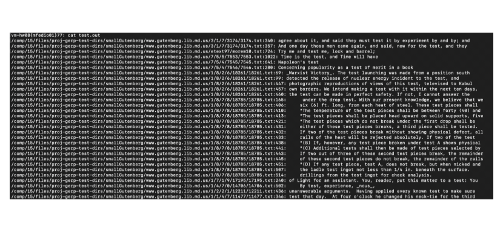

Modified Grep Linux Command
Details about and an example input/output from "Gerp", a modified high-performance recreation of the Linux "Grep" command.
This was my final project for my freshman year spring semester CS course (CS15: Data Structures and Algorithms). This C++ program recreates the Linux Grep command to query words from a given input directory. By using a custom hash-map interface that handles collisions with linear probing, all words are indexed at program run-time. This means a couple of seconds of indexing at the start, but then near O(1) lookup time for any word from the user.
Example Input Command
./gerp /comp/15/files/proj-gerp-test-dirs/smallGutenberg test.out
./gerp runs the executable, /comp/15/files/proj-gerp-test-dirs/smallGutenberg is
a directory containing a sample of text from Project Gutenberg, and test.out is the output file. Upon
running this command, the program prompts the user for words until the @quit exit code is given. The
instances of the entered words are then written into test.out.

Example Output Verification
The queried word was "test". Running the cat command on the output file shows the contents
in test.out, and we can see all instances of the queried word in the input directory. The program
also accepts case-insensitive searches by adding @insensitive to a query.
Key Computer Science Concepts
-
Data Structures & Algorithms: This program uses a custom Hash Map and Vectors with optimized read/write algorithms.
-
Space & Time Complexity: By utilizing a Hash Map and taking advantage of pointers-to-Strings, this program achieves high space and time efficiency, which is essential when querying large, arbitrary directory structures.